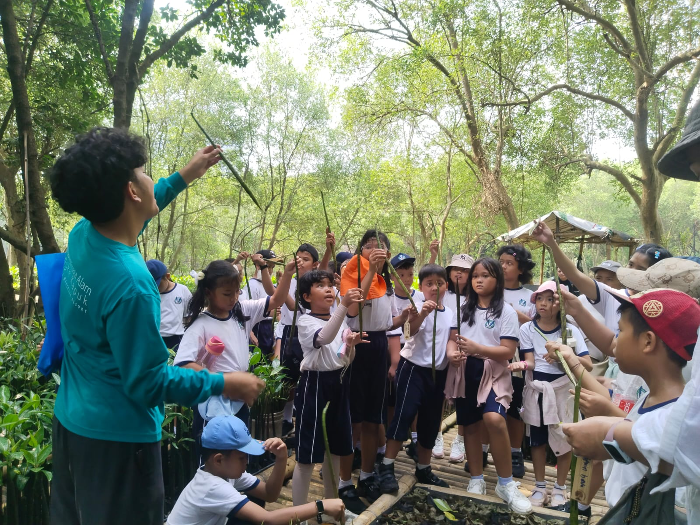
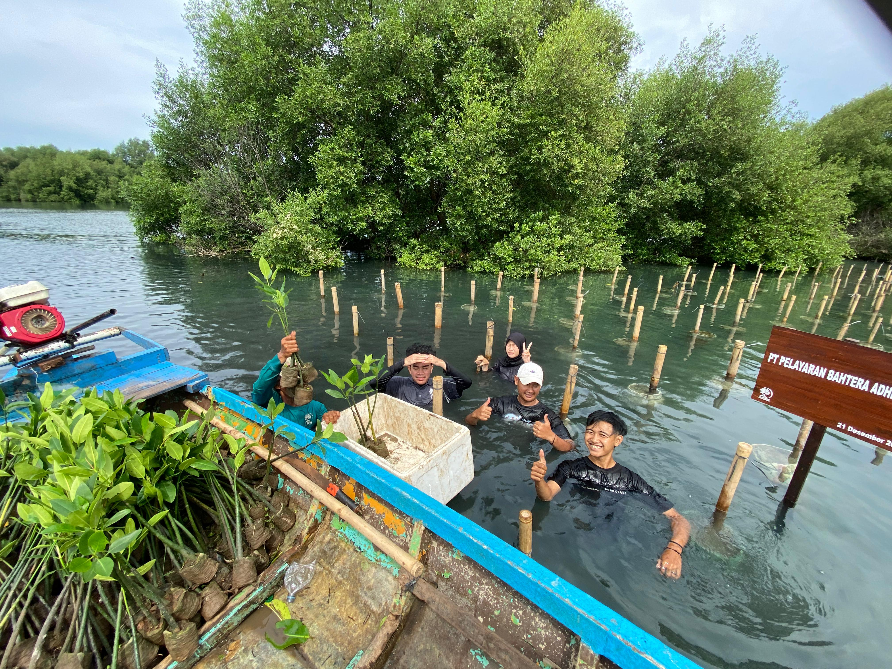
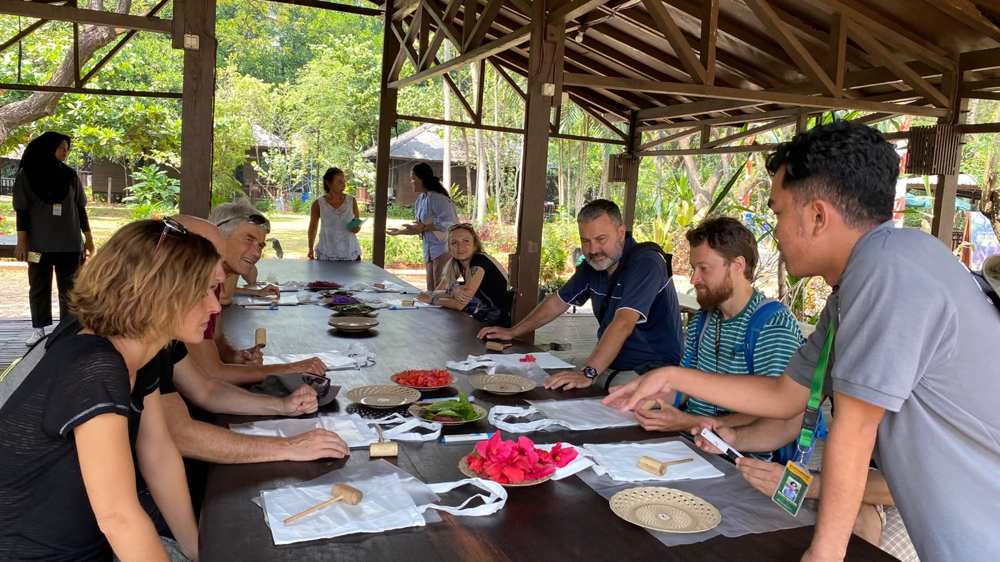

CONSERVATION · EDUCATION01
Conservation Coordinator & Environmental Guide
TWA Angke Kapuk / Jakarta Mangrove · PT Murindra Karya Lestari

Conservation activityAdd your photo · twa-angke-kapuk.jpg

Mangrove monitoringAdd your photo · twa-mangrove-monitoring.jpg

Environmental educationAdd your photo · twa-environmental-education.jpg
- Support mangrove monitoring by recording growth, seedling conditions, habitat observations, and water-quality parameters.
- Conduct bird observations and support conservation activities with corporate social responsibility (CSR) partners.
- Deliver environmental interpretation and education for students, visitors, and organizations, including international school groups.
- Help communicate site information through educational materials, signage, and web content.